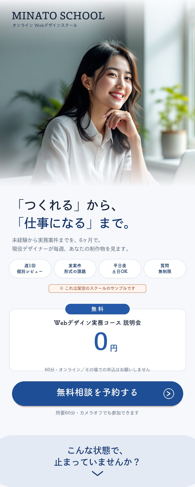
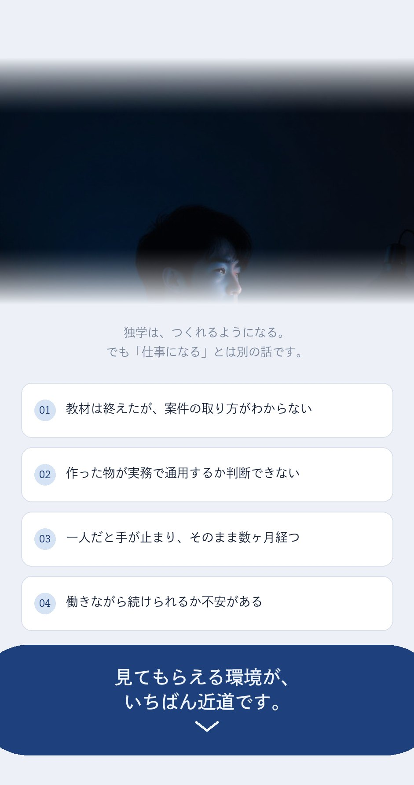
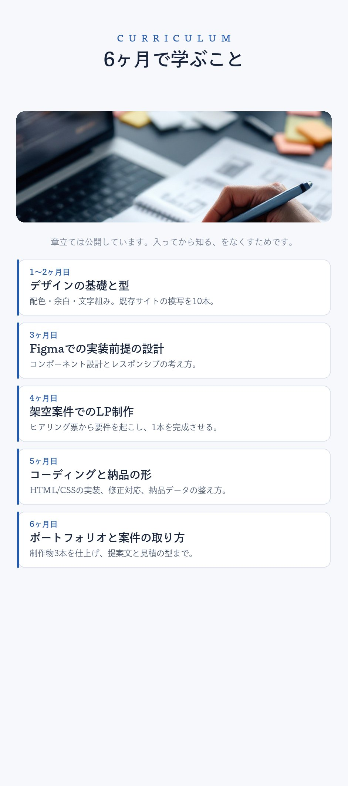
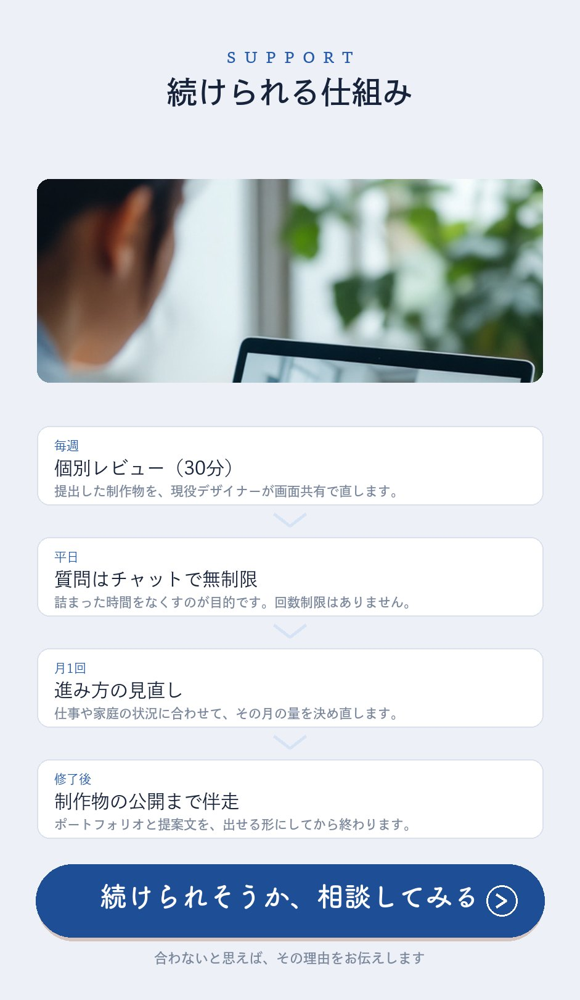
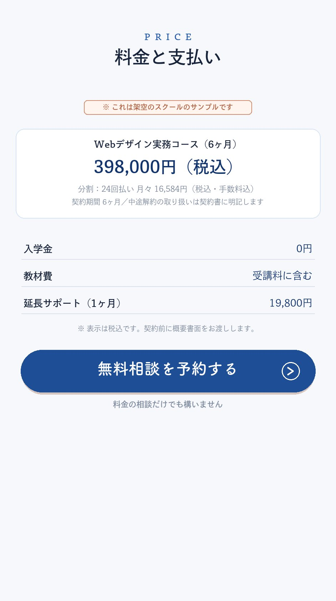
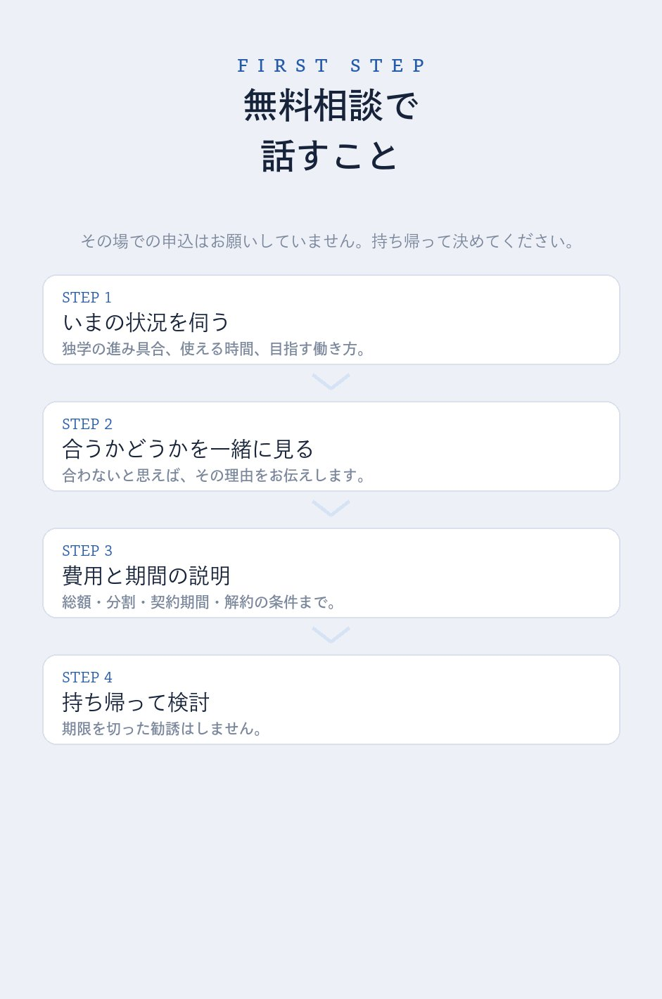
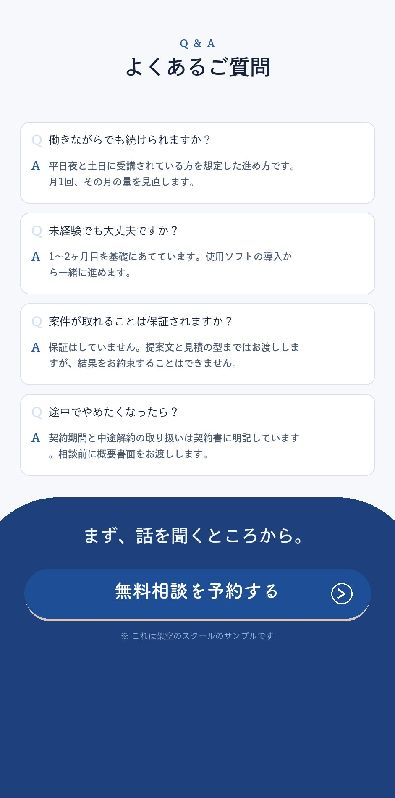

「つくれる」から、「仕事になる」まで。
未経験から実務案件までを、6ヶ月で。現役デザイナーが毎週、あなたの制作物を見ます。週1回の個別レビュー、実案件形式の課題、平日夜と土日の受講、質問は無制限。無料相談は60分・オンラインで、その場での申込はお願いしません。

こんな状態で、止まっていませんか？
独学はつくれるようになる。でも「仕事になる」とは別の話です。教材は終えたが案件の取り方がわからない、作った物が実務で通用するか判断できない、一人だと手が止まる、働きながら続けられるか不安がある。

6ヶ月で学ぶこと
章立ては公開しています。1〜2ヶ月目はデザインの基礎と型、3ヶ月目はFigmaでの実装前提の設計、4ヶ月目は架空案件でのLP制作、5ヶ月目はコーディングと納品の形、6ヶ月目はポートフォリオと案件の取り方。

続けられる仕組み
毎週30分の個別レビューで制作物を直します。平日の質問はチャットで無制限。月1回、仕事や家庭の状況に合わせてその月の量を決め直します。修了後も制作物を公開できる形にするまで伴走します。

料金と支払い
Webデザイン実務コース（6ヶ月）398,000円（税込）。分割は24回払いで月々16,584円（税込・手数料込）。入学金は0円、教材費は受講料に含みます。契約期間は6ヶ月で、中途解約の取り扱いは契約書に明記します。契約前に概要書面をお渡しします。

無料相談で話すこと
その場での申込はお願いしていません。いまの状況を伺い、合うかどうかを一緒に見て、費用と期間を説明し、持ち帰って検討していただきます。合わないと思えば、その理由をお伝えします。

よくあるご質問
働きながらでも続けられるよう平日夜と土日を想定しています。未経験の方は1〜2ヶ月目を基礎にあてています。案件が取れることは保証していません。契約期間と中途解約の取り扱いは契約書に明記しています。
